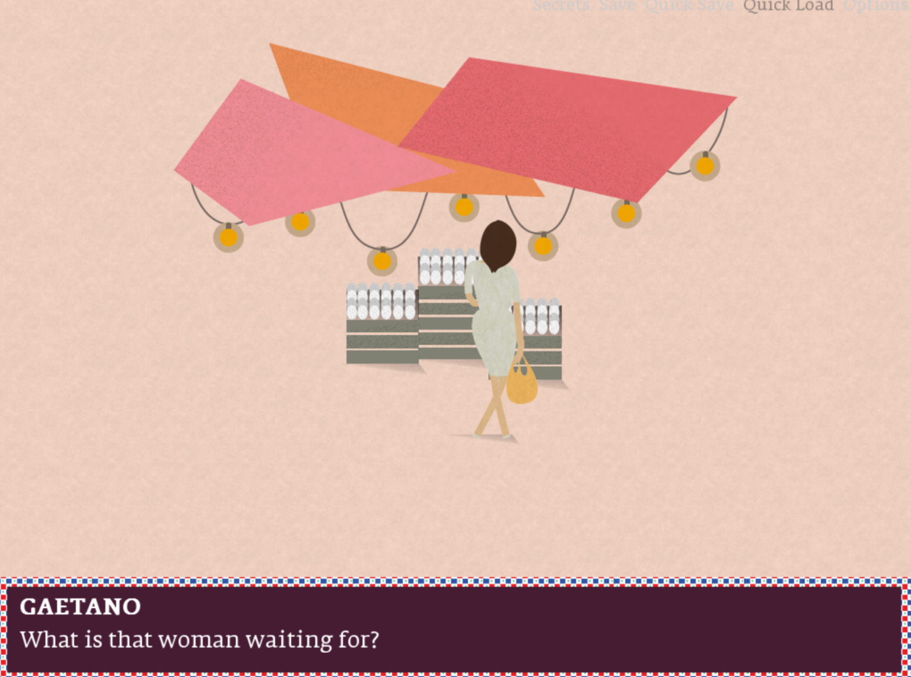
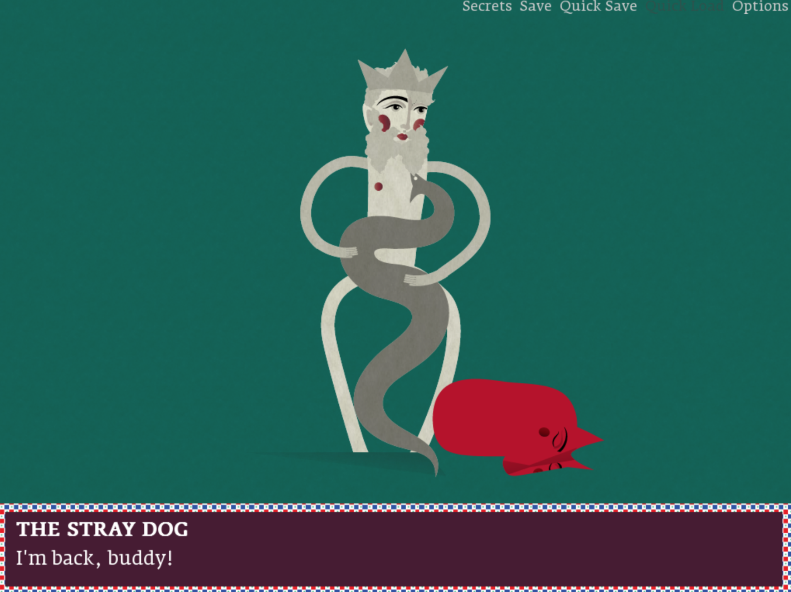

The Great Palermo
The Great Palermo is a short but incredibly rich game about a small, real city on the shores of Sicily.
The Great Palermo is a short but incredibly rich game about a small, real city on the shores of Sicily.
Despite the game including a protagonist to pilot, the focus is very much more on the town around him. The game opens with an Italian narrator describing an abstract scene of the town, personifying that town as a person with wants and desires. After, we are introduced to Gaetano, the boy who we make decisions through and move around town.
Gaetano is a typical child, he likes playing football alone, imagining himself a grand football player, and complaining when his mother (a disembodied voice) sends him to the market to buy eggs. On the way to and from the market, Gaetano will think about places he could visit. You then begin taking Gaetano through this town as he asks himself, or rather you, which route to take.
This is the first way in which the player interacts with the game. Refusing to do so by telling your mother that you don’t feel like going to the market only results in you going to bed and waking up to the same question you were faced with about a minute ago.
As Gaetano finds new routes through the city various food vendors will offer him regional dishes, the first of these is at church Martorana, where a man offers Gaetano a fruit shaped pastry, along with an informative (and real!) story about how the nuns of the chapel in past times had created the pastry for a king. Immediately after this exchange Gaetano imagines himself a king, and he is transformed into a bearded, robed, crowned man.
Gaetano assumes this form up until he finds another street vender and listens to another story. It is important to note that it is still Gaetano, as when he goes home he is still shown playing with his football.

This is the second way in which the player interacts with the world. The player is encouraged to continue to play so they may find as many vendors as possible to learn all the secrets of the town and adopt personas. Like the navigation system, the only punishment for not engaging is simply missing out on what story the game was to present you with.
For the most part, your personas do not interact or change how you interact with the world. The only times I saw this happen was with a few select personas who comment on a part of the game I have yet to mention: the strange woman.

Whenever you visit the market Gaetano or his persona will remark on a woman who always stands at the egg stall. Some personas will have remarks on her, and they all tell you that she must be waiting for a lover.
At one point, Gaetano is offered a drink of wine, after which the vendor gives him one of the few mini-games in The Great Palermo. Although this is barely a mini-game, as it shows various devils who pop up and fade out into darkness. The man then asks you how many devils you saw (there is never a consistent amount). At one point I chose 17 which was incorrect, and then another time 14, which apparently was the right answer for reasons unclear to me. The man comments on this too, questioning if I, or Gaetano, was able to do so via luck, or some other unknown metric.
Gaetano then transforms into a grown man, and if you approach the woman in the market she will tell you that she has been waiting for you. The woman is the man’s lover.

Going home the next day and choosing to go to bed instead of the new option “keep dreaming” ends the game, (It does feature an “it was all a dream” trope) prompting the narrator to give a quite sweet monologue about the town’s togetherness.

Visually the game is undeniably beautiful and quite stylish. The images themselves never move but they’re appealing to look at to the point where it doesn’t really matter. There are other parts of the game which detract from the experience however, the audio features some fun music, but the sound effects can be quite jarring, and the motor noise that accompanies Gaetano whenever he travels is quite confusing. The ways you interact with the game can also be quite tiresome, as you are never given a map or any device which would inform you of places you have already been. This leads to a lot of uninteractive trial and error where in order to learn more about the town or story, you bumble aimlessly through dialogue until you find something new. Personally I think the visual novel style is very useful for this game made by a company which describes themselves as “an unconventional game design studio” but I do wish they had taken full advantage of the medium by adding a puzzle or two related to the stories the vendors tell you, or something to make them more interactive.
I did try to pay close attention to the game's mapping, but I chose a thematic network instead as I found it much more interesting and telling. This network shows the themes/categories as hexagonal, and as expected you can see that most important items are related in some aspect to the history of the town. Also interestingly there are some items which are real, such as Donna Florio, but not too many. Most of the personas which are featured are typically workers like fishermen or a persona which is in a less dominant role like a stray dog. Because of this the authority category is quite small.
All in all I quite liked this game, and the surrealness of it all was quite enjoyable. I can tell the makers of the game really had fun telling their stories through the games characters.
In 1979, singer Ozzy Osbourne is kicked out of the unprecidented metal band Black Sabbath. After an incredible initial run of albums the band had begun to finally lose steam, it was apparent that something had to change, and Ozzy's drug habits had become too disruptive even for the band which wrote Snowblind. In the search for another singer, guitarist Tony Iommi meets Ronnie James Dio who had recently left his previous band Rainbow. After a short evening of song writing, they produced a demo of the first song on the Heaven and Hell album, and Dio was signed on to Sabbath.
Dio wasn't entirely happy with Black Sabbath however, and he wanted the freedom of having a band with his own name on it which would create music that was definitively, lyrically, Dio. This in part was because it was bassist Geezer Butler creating the lyrics during the Ozzy era, and while Dio did have a much larger part than Geezer did with lyrics in the 80's, many of early Sabbath's themes are still present.
This was the reason I decided to use six of Black Sabbath's albums for my text analysis project. The first data set display's the lyrical content of the Ozzy era within the albums Paranoid, Master of Reality, and Sabatoge. I only chose three albums as that was the amount of albums Dio created with Black Sabbath. Using these sets of data, hopefully we can reach some interesting conclusions about both Geezer and Dio's songrwiting.
Geezer and Ozzy's lyrical wordcloud


Geezer Butler and Ozzy Osbourne lyrics have 4,180 total words with a run time of 119 minutes. Geezer has around 35.2 words per minute in his songs


Ronnie James Dio and Geezer Butler lyrics > 5,516 total words with a run time of 137 minutes. Dio has around 40.3 words per minute across his songs. In an important note, apostrohpes are not entered into AntConc, the program which is being used to analyze the texts. This means that contractions are often counted as two words when viewed as N-grams. So the N-gram "s a" is actually a stand in for phrases like "there's a" or "it's a"
This data set includes all three albums made under the Black Sabbath title with Dio and Geezer Butler. In these three albums Dio is the primary songwriter. As an important note, Dio leaves after creating the Heaven and Hell (1980) and Mob Rules (1981) albums, wanting to create his own band. After a sucessful solo career, he then joins back up with Black Sabbath and writes the Dehumanizer (1992) album.
The most immediate deviation between the two lyricists is the use of exclamations. The word "Yeah" is used 115 times throughout the Ozzy era, but only 32 times throughout Dio's. This pattern is true for other exclamations, and if we don't count these words towards words per minute, we can gather that Ozzy era Black Sabbath is much more focused on musical jams and instrumental sections. This then changes when Dio joins the band, and we see the vocalist take a much more prominant and forward role.
This also lines up with Dio's apparent reason for leaving the band, which is that he wanted a new group which was more focused around him as a frontman, as opposed to in Black Sabbath where his prominence was shared more with the instrumentalist founders.
Another really interesting difference in lyrical content is the use of pronouns. Dio is significantly more likely to put a verb after a pronoun such as you. Something less visible in the graphs or N-gram sheets is how Geezer is a huge fan of the preterite, the stories he writes are usually final, already completed.
With this we can tell that Geezer and the protagonists he creates are much more passive, they often describe things happening to them, often something that cannot be stopped has been set in motion. Songs like "Lord of this World" "Megalomania" "Hand of Doom" along with many many other songs including the titular "Black Sabbath" describe stories, usually presented as cautionary tales, where a person or society has dug their own grave and now must lie in it.
Dio on the other hand likes to force the protagonist, usually the listener, to act on the situations surrounding them, sometimes even including calls to action. For every song like "Too Late" where someone summons something they cannot control, theres a "Neon Knights" "Falling off the Edge of the World" where Dio procliams "no, never again!"
This difference is often passively noted by many fans. Early Black Sabbath is typically slotted into the Doom Metal subgenre, while Dio is more associated with flashy, high energy genres.